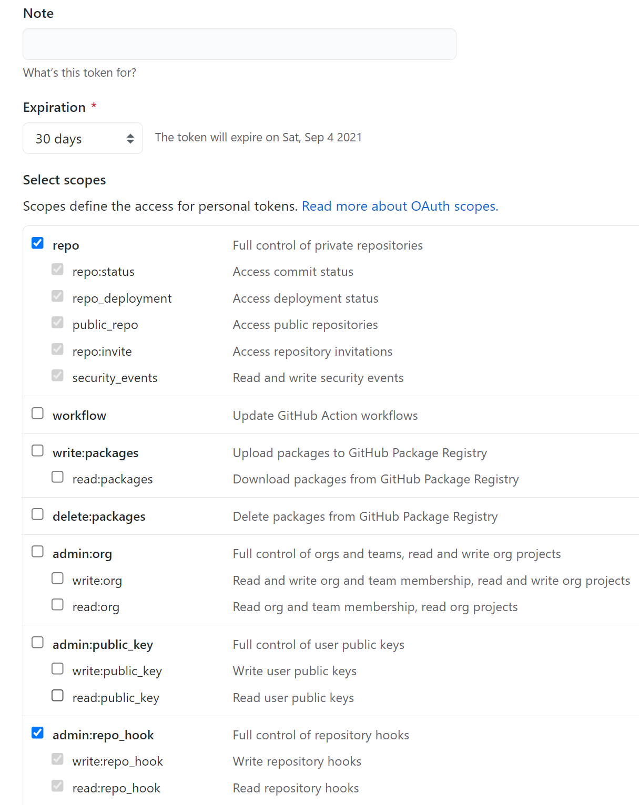
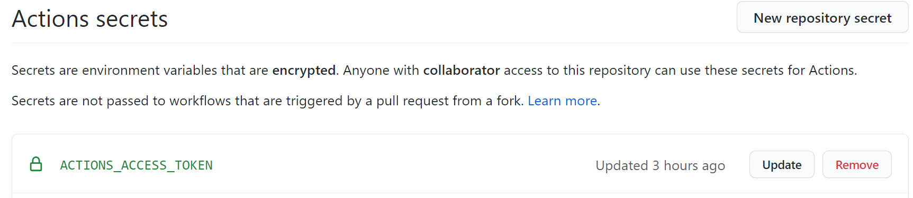
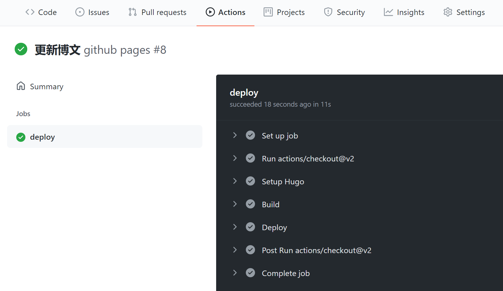
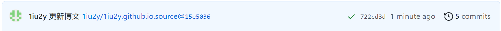

众所周知，hugo的github page部署有两种方式，分别是手动部署与github actions部署。
手动部署就是手动将生成的public文件夹中的静态网页内容推送到远程GitHub page仓库，但是比较繁琐，而且源码文件夹本身就是一个git仓库，嵌套的git仓库操作非常麻烦，容易出一些奇奇怪怪的问题。
所以，自动化的github actions就显得非常高效简洁了。
建立远程仓库
git init初始化git remote add ...添加远程仓库
生成personal_token
找到个人资料的Settings->Develop settings->Personal access tokens，点击Generate new token生成personal token。勾选如下内容，并且注意到默认的token有效期是30天，这也不用去修改为永不过期，因为永久的token是非常危险的。

personal token创建
将该token的内容复制下来，然后添加到github上源码仓库的secrets之中。

secret添加
记得过期之后再去创建一个，然后修改secret的内容。
添加github action
添加.github/workflows/xxx.yml文件，创建github action。
1
2
3
4
5
6
7
8
9
10
11
12
13
14
15
16
17
18
19
20
21
22
23
24
25
26
27
28
29
30
31
32
33
34
35
|
name: github pages
on:
push:
branches:
- master # Set a branch to deploy
pull_request:
jobs:
deploy:
runs-on: ubuntu-20.04
steps:
- uses: actions/checkout@v2
with:
submodules: true # Fetch Hugo themes (true OR recursive)
fetch-depth: 0 # Fetch all history for .GitInfo and .Lastmod
- name: Setup Hugo
uses: peaceiris/actions-hugo@v2
with:
hugo-version: 'latest'
# extended: true
- name: Build
run: hugo -D
- name: Deploy
uses: peaceiris/actions-gh-pages@v3
with:
personal_token: ${{ secrets.ACTIONS_ACCESS_TOKEN }} # 这里的 ACTIONS_DEPLOY_KEY 则是上面设置 Private Key的变量名
external_repository: 1iu2y/1iu2y.github.io # Pages 远程仓库
publish_dir: "./public"
keep_files: false # remove existing files
publish_branch: master # deploying branch，对应于1iu2y.github.io仓库的branch，该仓库的默认分支是master，所以我这里也定义为了master
commit_message: ${{ github.event.head_commit.message }} #commit_message: ${{ github.event.head_commit.message }}
|
It works!

action成功执行

另一个仓库被成功修改
技巧
除去personal_token之外，还可以使用public_key的方式进行action部署，有待尝试。
如果使用deploy_key的话，将yml文件对应内容进行修改。这种方式的好处在于密钥不会过期。
1
2
3
4
5
6
7
8
|
with:
# personal_token: ${{ secrets.ACTIONS_ACCESS_TOKEN }} # 这里的 ACTIONS_DEPLOY_KEY 则是上面设置 Private Key的变量名
deploy_key: ${{ secrets.ACTIONS_DEPLOY_KEY }}
external_repository: 1iu2y/1iu2y.github.io # Pages 远程仓库
publish_dir: "./public"
keep_files: false # remove existing files
publish_branch: master # deploying branch
commit_message: ${{ github.event.head_commit.message }} #commit_message: ${{ github.event.head_commit.message }}
|
参考链接：
{kind=link}
{kind=link}
{kind=link}
{kind=link}